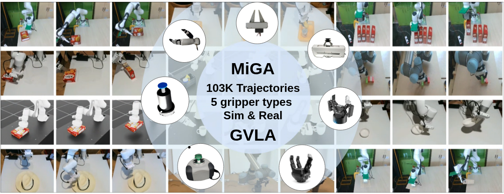
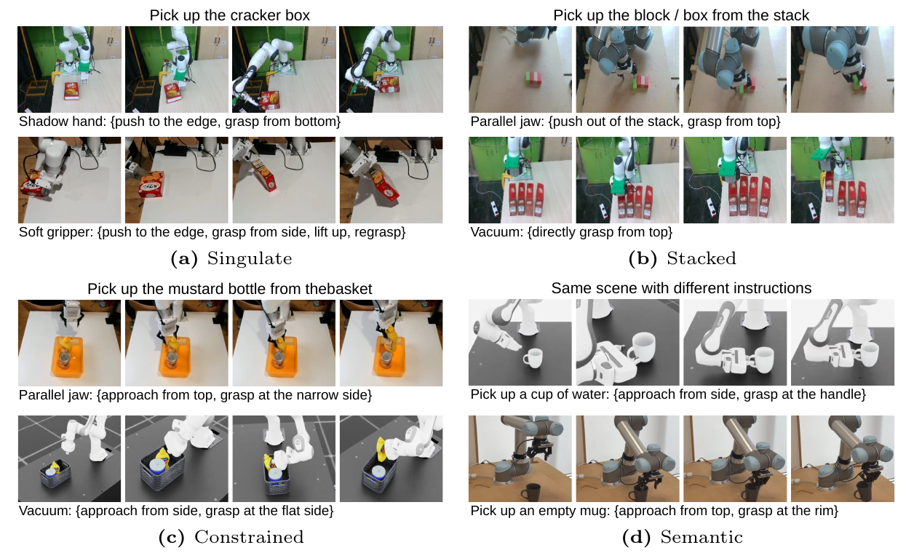
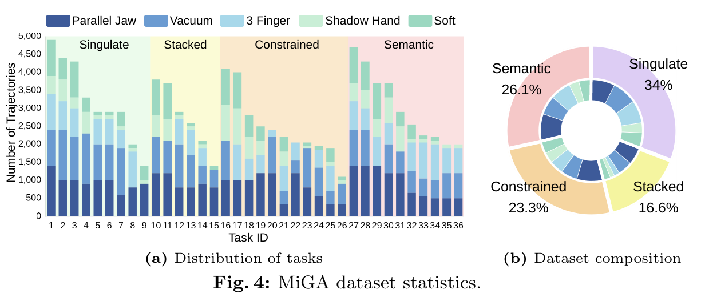
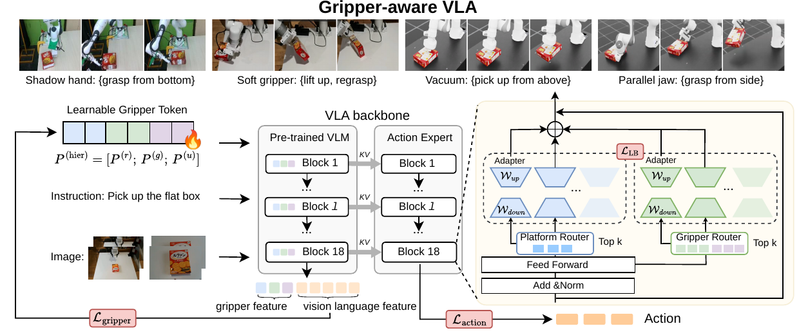
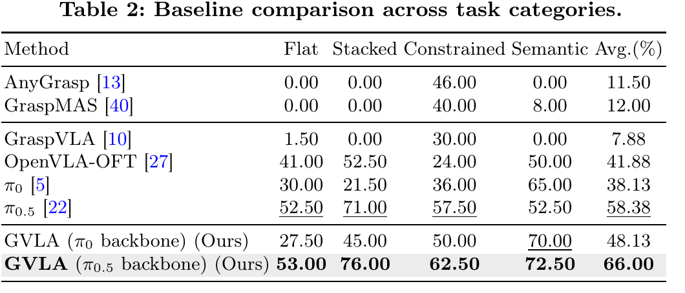
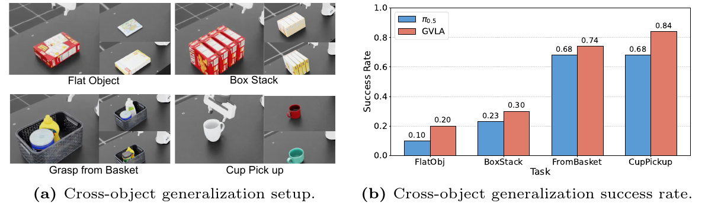
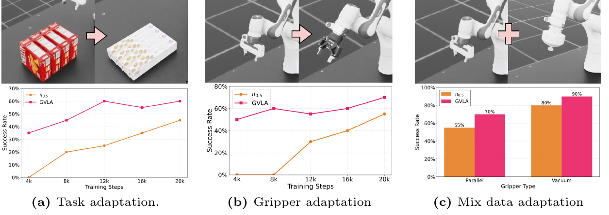
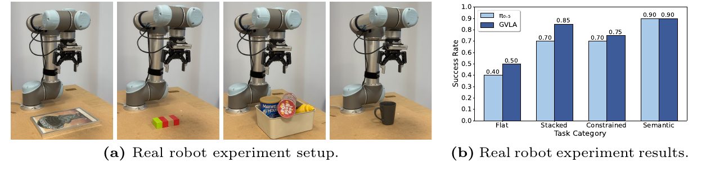

Vision language action models (VLAs) have advanced general purpose robotic grasping and manipulation by enabling robots to interpret visual observations and natural language instructions to generate executable action sequences. However, existing VLAs often implicitly assume gripper invariance, despite grasping strategies being inherently embodiment-dependent. Different gripper types, such as parallel-jaw and suction, usually require distinct interaction strategies to achieve the same grasping objective. Moreover, current datasets for VLAs predominantly rely on parallel-jaw grippers, limiting gripper-aware learning. To address this gap, we introduce MiGA, a multi-gripper-aware dataset spanning five distinct gripper types across multiple robots with 103,000 demonstrations, explicitly capturing strategy divergence under shared task objectives. We further propose GVLA, which combines a new multi-gripper tokenizer with adapter-based policy routing. Our new gripper encoding induces structured embedding information that balances parameter sharing and strategy differentiation, while layer-wise probing confirms meaningful gripper-conditioned representations for VLAs. Intensive experiments in both simulation and real-world robots show that GVLA outperforms the current baselines across evaluated settings. Our method also improves zero-shot generalization or few-shot adaptation to new objects or unseen tasks, and enables more efficient gripper adaptation.
MiGA is a multi-gripper-aware dataset with 103K demonstrations across 36 tasks, 5 gripper types, and both simulation and real-world robot setups. It captures how identical task objectives require different contact choices, approach directions, and execution strategies across gripper embodiments.


GVLA conditions a VLA backbone on gripper embodiment through Multi-gripper tokenization and a Dual Mixture-of-Adapters. Platform-, type-, and instance-level gripper tokens provide structured conditioning, while gripper and platform adapter pools route computation toward embodiment-specific policies.

Across simulation and Real-world Validation, GVLA improves gripper-aware manipulation, zero-shot object generalization, and few-shot adaptation to new tasks or grippers.




@inproceedings{zhang2026gvla,
title={Gripper-aware Vision Language Action Models},
author={Zhang, Hanyi and Luo, Zihong and Li, Tianyu and Nguyen, Khang and Hela, Basu and Kumar, Shreyas and Tran, Ngoc Duy and Dai, Feng and Munasinghe, Charith and Pe{\~n}a Queralta, Jorge and Toffetti, Giovanni and Vo, Khoa and Le, Ngan and Prakash, Ravi and Vuong, Quan and Ta, Tung D. and Hu, Long and Nguyen, Anh and Huang, Baoru},
booktitle={European Conference on Computer Vision (ECCV)},
year={2026},
organization={Springer}
}